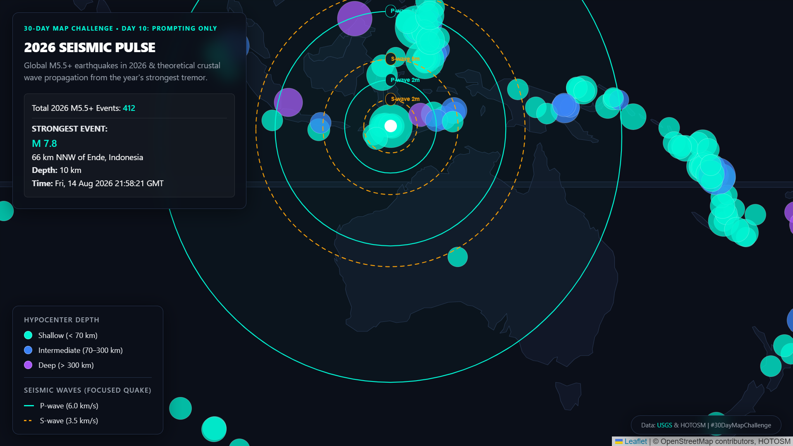
Day 10 • Prompting Only
Cartographic Experiments & Spatial Code
#30DayMapChallenge 2026
An annual spatial data and cartographic challenge exploring new visualization paradigms, satellite Earth observation workflows, prompt-driven code generation, and live real-time geospatial feeds.
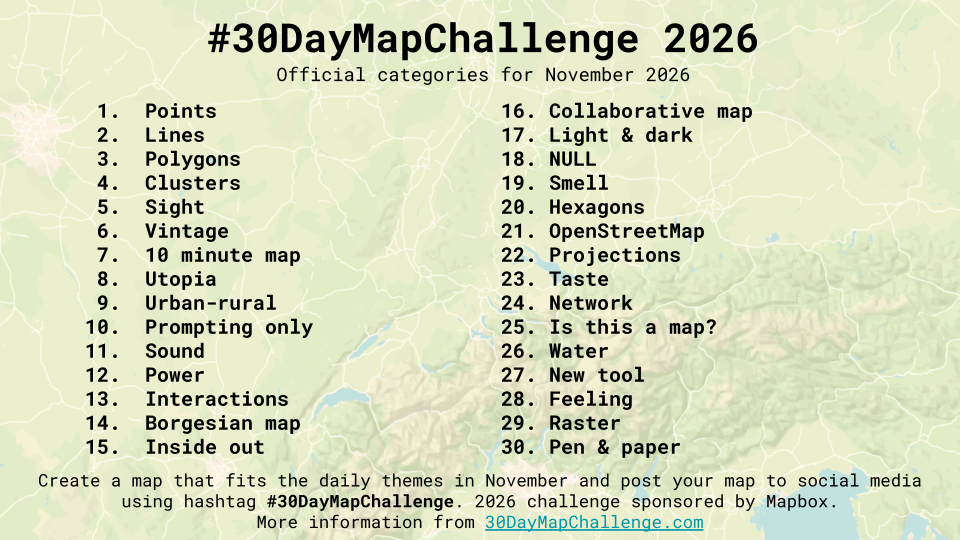
Gallery / 2026 Collection
Map Entries (Days 01–10)
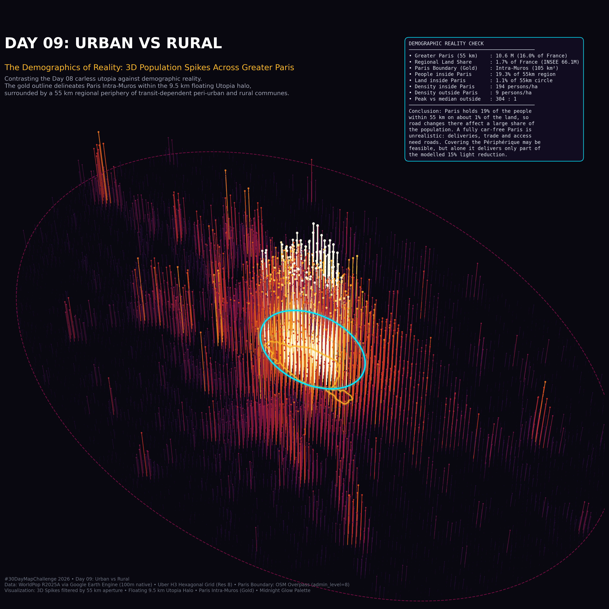
Day 09 • Urban vs. RuralUrban vs. Rural
Spatial distribution analysis mapping urban density contrasts and territorial gradients across regional land-use matrices.
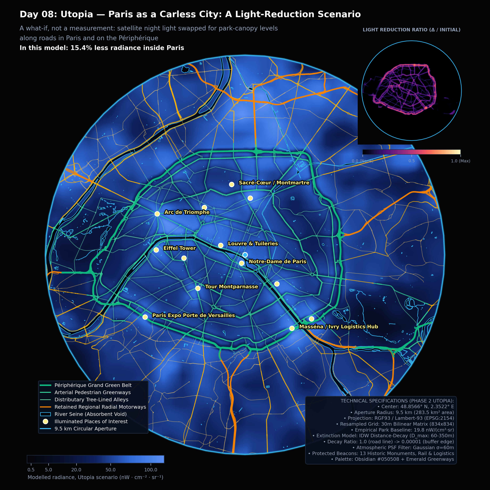
Day 08 • UtopiaParis Utopia
An exploratory vision blending urban green corridors, pedestrian connectivity, and spatial equity across Paris metropolitan districts.
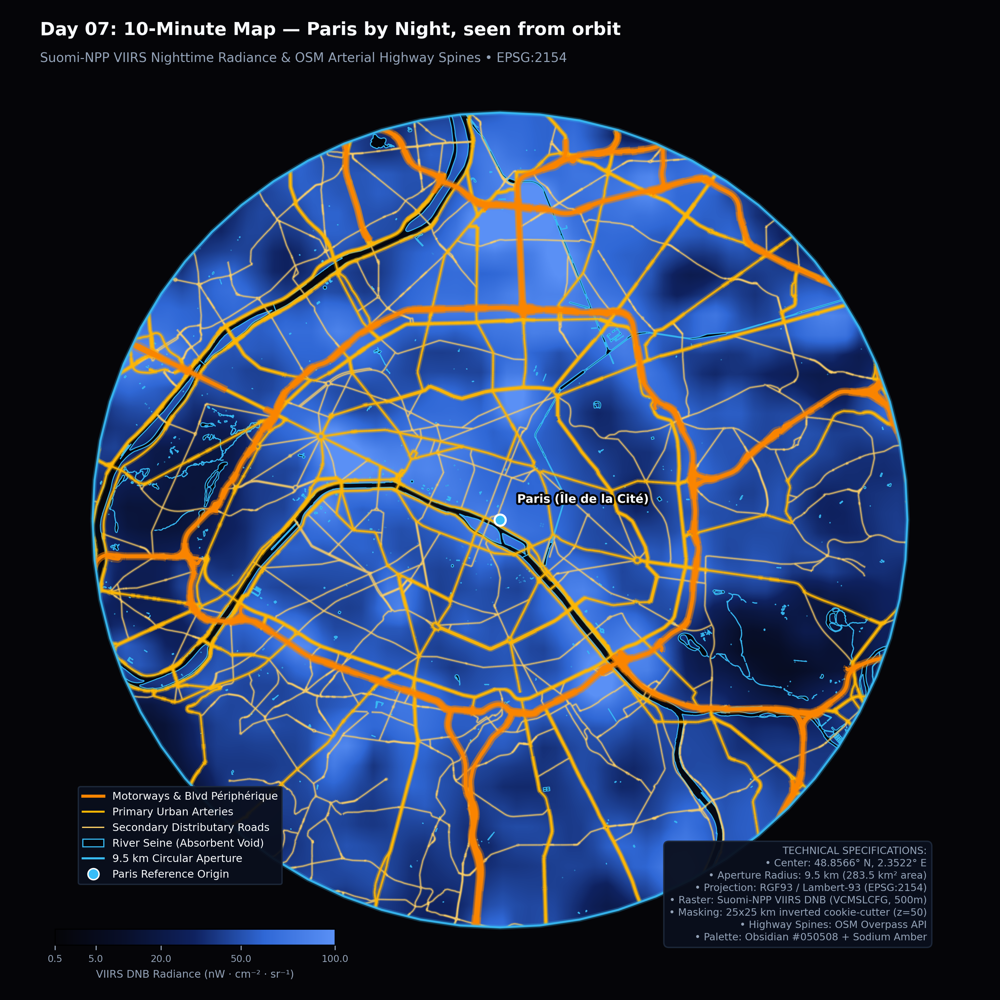
Day 07 • 10-MinutesParis Night (10-Minutes)
Isochrone mapping and night-time urban mobility analysis investigating 10-minute accessibility ranges across central Paris.
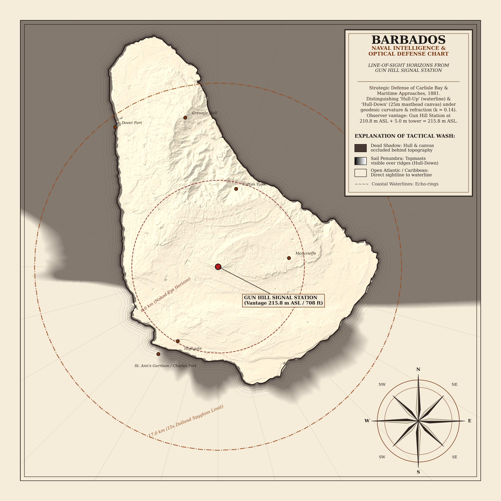
Day 06 • VintageBarbados 1881 Vintage Viewshed
Historical signal-station line-of-sight viewshed computation for 1881 Barbados, rendered with classical vintage cartographic styling.
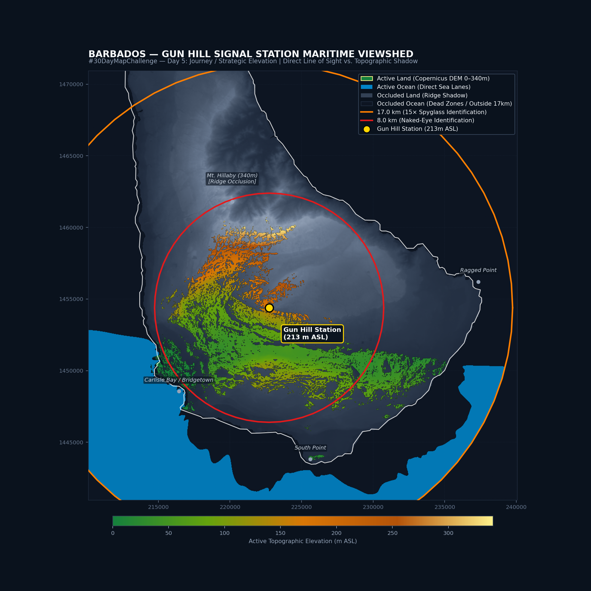
Day 05 • Senses: SightGun Hill Viewshed (Sight)
Topographic line-of-sight visibility modeling from Gun Hill Signal Station, analyzing coastal and inland surveillance horizons.
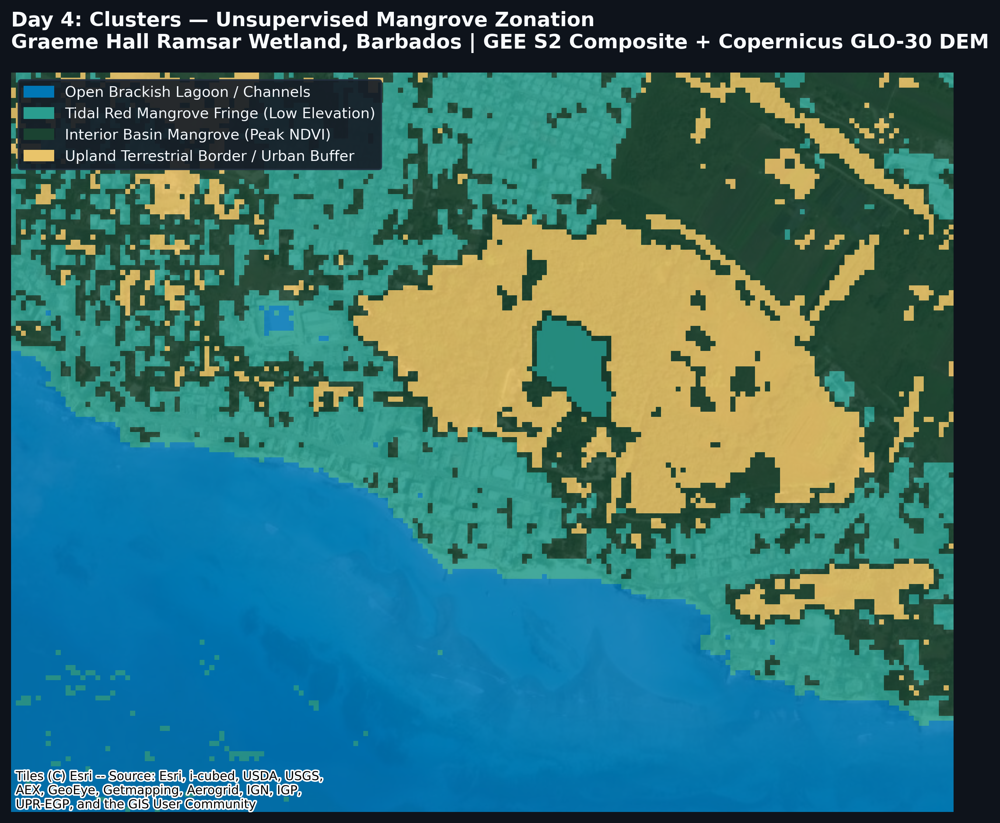
Day 04 • ClustersGraeme Hall Mangrove Clusters
Spatial clustering and canopy segmentation of Graeme Hall Nature Sanctuary mangrove ecosystems using high-resolution spatial clustering.
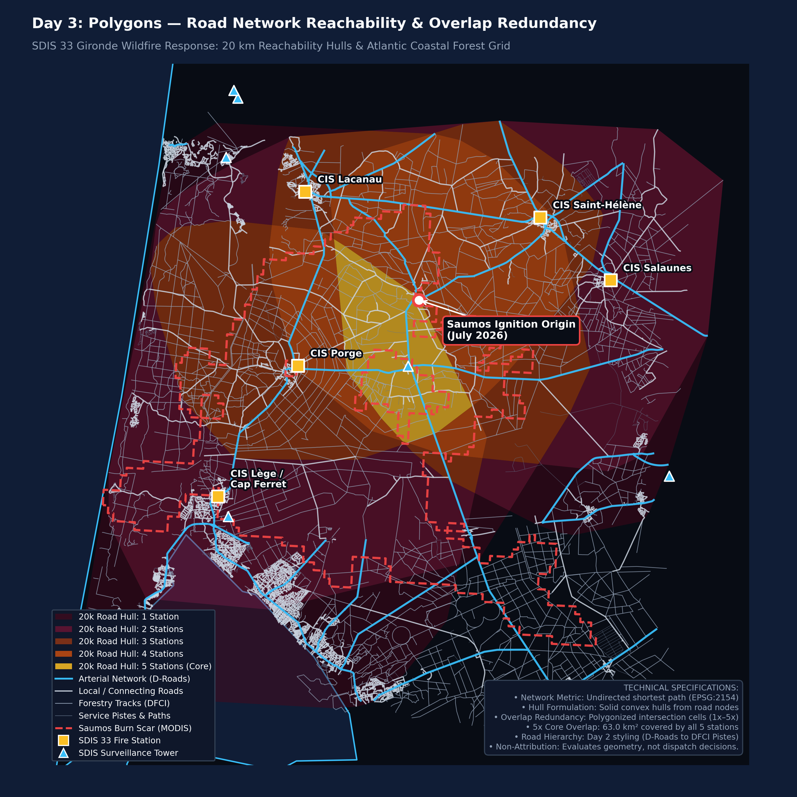
Day 03 • PolygonsWildfire Burn Scars
Polygon perimeter mapping and burn scar severity extraction using satellite remote sensing multispectral indices.
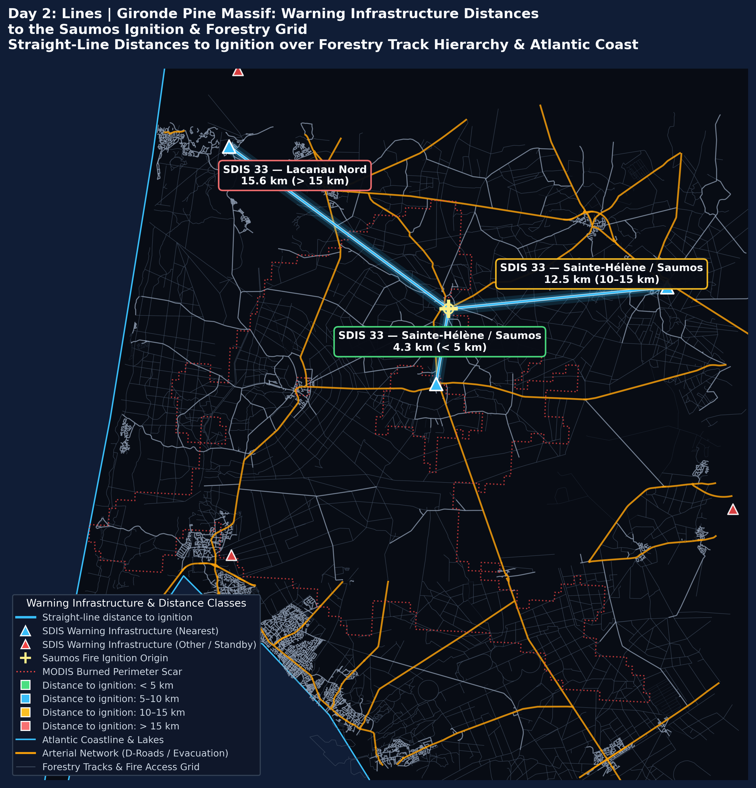
Day 02 • LinesFire Perimeter Fronts
Linear active fire progression fronts mapped across rugged terrain with vector line density and directionality analysis.
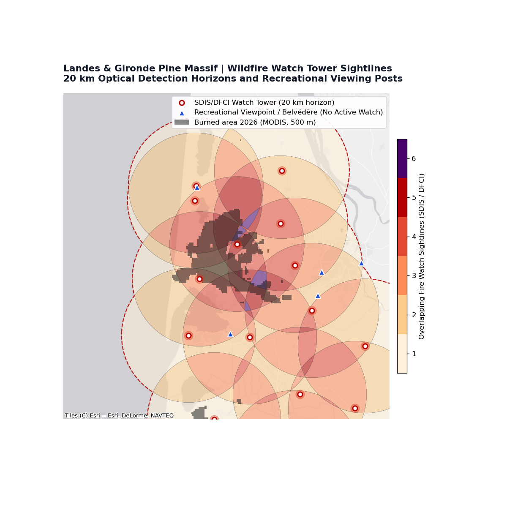
Day 01 • PointsFire Watch (Thermal Hotspots)
MODIS / VIIRS active thermal hotspot detections mapped as discrete point observations to identify active ignition zones.
Days 11–30 Coming Up
Additional daily entries, live map scripts, and reproducible notebooks will be published here daily.
Challenge Ongoing